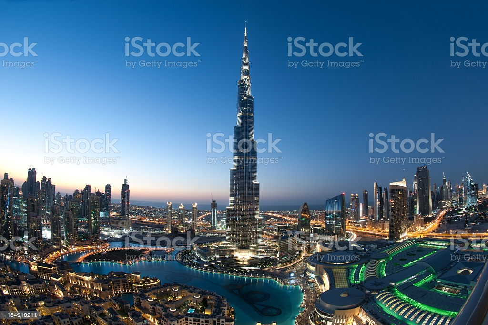
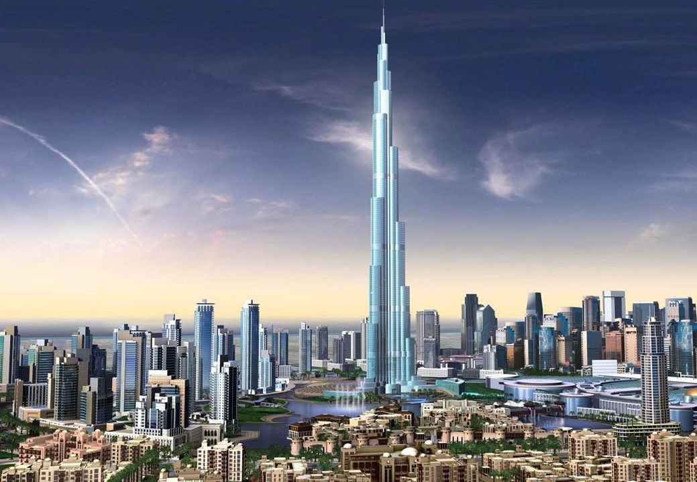

Edifício Burj Khalifa
Descrição do Projeto
Burj Khalifa Bin Zayid (em árabe: برج خليفة; "Torre do Khalifa"), anteriormente conhecido como Burj Dubai, é um arranha-céu localizado em Dubai, nos Emirados Árabes Unidos, sendo a mais alta estrutura e, consequentemente, o maior arranha-céu já construído pelo ser humano, com 828 metros de altura e 160 andares. Sua construção começou em 21 de setembro de 2004 e foi inaugurado no dia 4 de janeiro de 2010. Foi rebatizado devido ao empréstimo feito por Khalifa bin Zayed Al Nahyan, xeque do emirado de Abu Dhabi, depois que este emprestou 10 bilhões de dólares para evitar que o emirado de Dubai desse um calote em investidores de uma de suas principais companhias, a Dubai World. (fonte 100% segura:Wikipédia)
Este Edifício foi todo exclusivamente projeto pelo Engenheiro Civil João Vitor Cenedeze, que com sua enorme experiência e gama de projetos realizados durante seus 2 anos de formado, foi concluído o projeto em apenas 15 minutos de trabalho, assim recebendo seu primeiro bilhão de dólares diretamente na sua conta do NuBank.
← Voltar ao portfolio